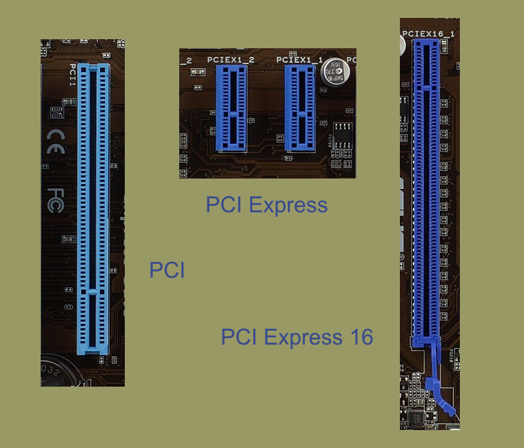

Peripheral Component Interconnect
L'un des intérêts du bus PCI est que deux cartes PCI
peuvent dialoguer entre elles sans passer par le processeur.
La spécification de ce bus est initialement due à Intel,
qui a commencé à y travailler vers 1990 à cause d'un problème
de bande passante sur les PC de l'époque et d'autres problèmes
inhérents aux différents bus 32 bits alors présents.

Depuis 2004, pour les périphériques rapides
(tel que les cartes graphiques), le bus PCI (ainsi que l'AGP)
est remplacé par une version plus petite et plus rapide :
le PCI Express.
En savoir plus